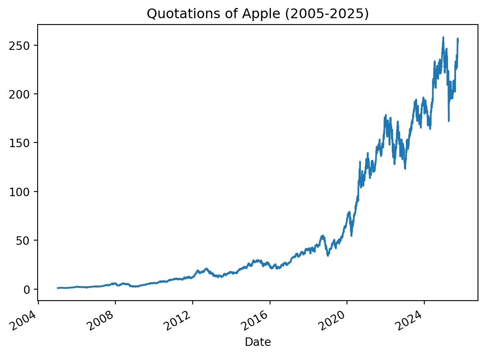
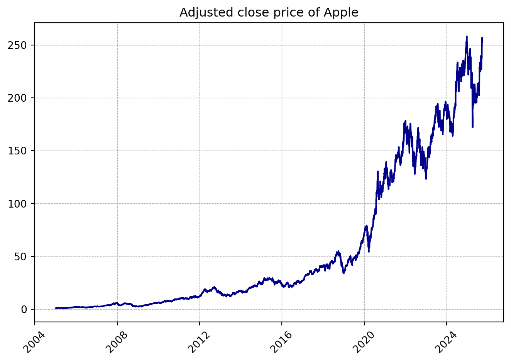

But the most interesting feature is the possibility of creating a dynamic document – mix text with python code and python results – this is done in so called code chunks – see below for examples.
Example 1
This chunk prints the code, evaluates it and prints the results
import numpy as npimport pandas as pd# Generate 1000 random values from a standard normal distributiona = np.random.normal(size=1000)# Use pandas to get a summarysummary = pd.Series(a).describe()print(summary)
count 1000.000000
mean -0.044214
std 0.977896
min -3.244801
25% -0.696492
50% -0.055908
75% 0.649413
max 2.979099
dtype: float64
Example 2
By using an additional chunk option #|eval: false you can for example see just the code and not the results (the code is printed, but not executed/evaluated):
import numpy as npimport pandas as pd# Generate 1000 random values from a standard normal distributiona = np.random.normal(size=1000)# Use pandas to get a summarysummary = pd.Series(a).describe()print(summary)
Example 3
or the opposite – by using the option #|echo: false you can see just the results and not the code
count 1000.000000
mean -0.081479
std 0.980166
min -3.409914
25% -0.703115
50% -0.068533
75% 0.593234
max 3.007910
dtype: float64
Example 4
you can load additional packages without showing that in the output file (CAUTION! packages should be installed BEFORE, e.g. in a console window):
Example 5
If you want to avoid warnings, you can use another chunk options #/warning: false. More options can be found here: Quarto chunk execution options
Example 6
Then you can use functions from the loaded package in the following chunks, e.g.
AAPL = yf.download("AAPL", # symbol/ticker start ="2005-01-01", end ="2025-09-30")AAPL.tail()
YF.download() has changed argument auto_adjust default to True
[*********************100%***********************] 1 of 1 completed
Price
Close
High
Low
Open
Volume
Ticker
AAPL
AAPL
AAPL
AAPL
AAPL
Date
2025-09-23
254.429993
257.339996
253.580002
255.880005
60275200
2025-09-24
252.309998
255.740005
251.039993
255.220001
42303700
2025-09-25
256.869995
257.170013
251.710007
253.210007
55202100
2025-09-26
255.460007
257.600006
253.779999
254.100006
46076300
2025-09-29
254.429993
255.000000
253.009995
254.559998
40127700
Example 7
One can also generate plots in the output document.
# lets change column names so that they are more readibleAAPL.columns = [f"{price.lower()}_{ticker}"for price, ticker in AAPL.columns]# and make a plotAAPL['close_AAPL'].plot(title ="Quotations of Apple (2005-2025)")

Example 8
When generating plots, one can use additional plotting options

Figure 1: Adjusted close of AAPL
Example 9
One can also refer to results of Python objects inline in the text.
Inline expressions should be confined to simple values that you have pre-computed within normal code cells (rather than function calls that do non-trivial work). This is because the protocol used for inline expressions is not compatible with some Python libraries (especially those that use multi-threading or multi-processing).
For example: on 2025-09-29 Apple quotations started with the price of 254.56$ to finish a day on a level of 254.43$ with the volume of trading equal to 40127700 units.
Dollars in Quarto/Markdown
We had to mask a dollar ($) sign in the above examples as it has a special meaning in Markdown – very similar to LaTeX – it can be used to indicate a mathematical formulea, for example: \(x_{1+s}^{2*d}\), \(\frac{y^2}{x_{1t}}\), \(y_t = \alpha_0 + \phi_1 x_{1,t} + \epsilon_t\).
Based on the contents of this document create presentation slides in two forms: PPTX and revealjs. Add more contents for example using graphs or tables